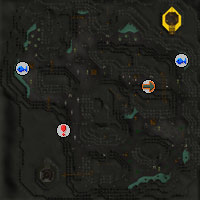
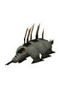
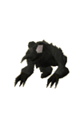
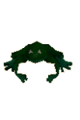

")
Dorgesh-Kaan South Dungeon (Members)
Warning | Introduction | Location | Points of Interest
Personalities | Quests | Beasts of the Dungeon | Miscellaneous
Personalities | Quests | Beasts of the Dungeon | Miscellaneous
Warning
You will need a light source to explore this dungeon.
As some creatures in the dungeon have a poisonous bite, it's a good idea to bring an anti-poison potion with you.
Introduction

Location

Another, far more treacherous path, could be through the Kalphite Hive. Previously sealed off by the Dorgeshuun, the Kalphite Hive entrance has been opened so that more curious humans can access their city. This means that those within the earlier reaches of the Hive can enter the Dorgesh-Kaan South Dungeon on their way to the Dorgeshuun city.
Points of Interest

There are two Fishing spots, where frog spawn and slimy eels can be caught.
There is a fairy ring in the centre of the Dungeon.
An Agility Course ranges overhead for those who like to mix swinging over crevasses with their slaying.
The cave is a valuable source of swamp weed, with several creatures dropping clumps of it.
Personalities
There are no personalities of note in this Dungeon.
Quests
No quests can be started in the Dorgesh-Kaan South Dungeon.
Beasts of the Dungeon
![[image]](../../img/main/kbase/npc/area_guides/cave_bug.gif) Cave bugs are strange creatures confined to the darkness of the caves. They are very simple opponents, and anyone bold enough to enter the dungeon should have little difficulty killing them.
|

Cave crawlers are long, lizard-like creatures with six legs and a series of green stripes down their backs. Their bite is poisonous, but they are less resilient in the face of crushing or Magic attacks.
|
|
| Cave bugs can be found throughout the dungeon; you must have a Slayer level of 7 to kill them. | You must have a Slayer level of 10 to kill cave crawlers. |
![[image]](../../img/main/kbase/npc/area_guides/cave_slime.gif) Cave slimes are shapeless creatures that live by digesting anything around them, including adventurers that are overcome by the dangers of the dungeon. Their attacks, like the cave crawler, are poisonous.
|
![[image]](../../img/main/kbase/npc/area_guides/big_frog.gif) Big frogs are considerably larger than you'd ever expect a frog to grow to, and they're certainly not for new adventurers. Thankfully, they never stray far from water.
|
|
| You must have a Slayer level of 17 to kill cave slime. |
|

The molanisk is a sedate and passive creature, gripping to the walls and flicking out its tongue whenever prey crawls past. It takes one ring, however, from a Slayer bell for the molanisk's bile to rise, charging at you with its horn!
|
![[image]](../../img/main/kbase/npc/area_guides/giant_cave_bug.gif) Grown to monstrous proportions, these beasts are near unrecognisable from their smaller brethren, the lesser cave bugs. It almost seems as if the nearby kalphites have had an influence on these enlarged creatures...
|
|
| You must have a Slayer level of 39 and a Slayer bell to kill a molanisk. The molanisk often drops mole claws. | The larger cave bugs can be found throughout the dungeon; you must have a Slayer level of 7 to kill them. They can drop a water battlestaff. |
|

Giant frogs have fed on the smaller creatures around them for years to grow into monstrous beasts capable of slaying all but the toughest of adventurers.
|
||
| The giant frogs are found in the south-east areas of the dungeon, while some others have wandered farther afield. |
Miscellaneous
- Cave crawlers, molanisks and large cave bugs are good for herb drops, especially for secondary ingredients.
- Cave slime always drops two items, sometimes including a Treasure Trail map.
- Some of the creatures drop swamp weed.

More articles in
Dungeons
|
|